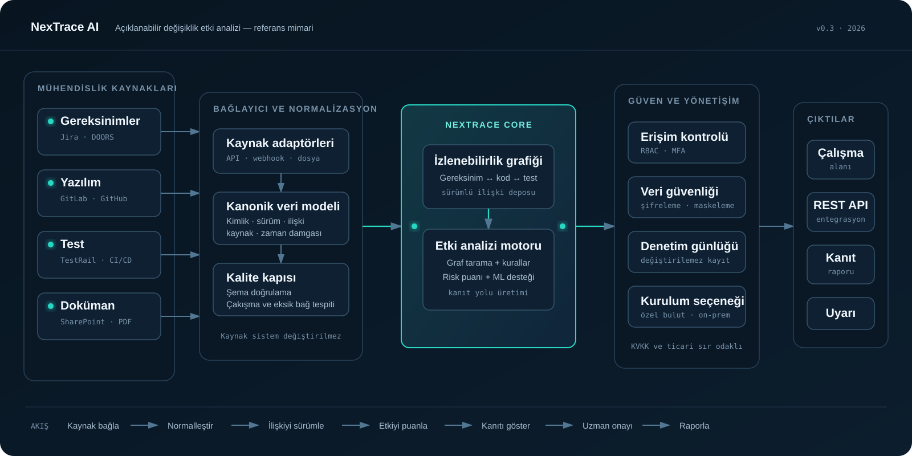

Gerçek veri girişi
İzlenebilirlik grafiğini CSV’den yükle
Varlık ve ilişki dosyalarını içe aktar; ardından değişen düğüm kimliği üzerinden canlı etki analizi çalıştır.
Aktif veri kümesi: sentetik demo grafiği
Açıklanabilir karar desteği
Bir gereksinim değişmeden önce etkilenecek kodu, testi ve dokümanı iz yollarıyla görün.
Gerçek veri girişi
Varlık ve ilişki dosyalarını içe aktar; ardından değişen düğüm kimliği üzerinden canlı etki analizi çalıştır.
Aktif veri kümesi: sentetik demo grafiği
SYS-REQ-142 telemetri paketlerinin en yüksek yük altında uçtan uca iletim eşiğini düşürür.
Analiz özeti
Analiz, izlenebilirlik grafiğindeki doğrulanmış ilişkileri ve sürüm bilgilerini kullanır.
Canlı izlenebilirlik grafiği
Açıklanabilir sonuçlar
| Varlık | Tür | Kanıt yolu | Risk | Durum |
|---|---|---|---|---|
| Sonuçlar için etki analizini çalıştır. | ||||
Teknik kanıt
Kaynak sistemlerden açıklanabilir etki kararına kadar izlenebilir, güvenli veri hattı.

Jira, GitLab, TestRail ve doküman havuzları yalnızca bağlayıcılarla okunur.
Her risk puanı, kaynak varlığa uzanan denetlenebilir ilişki yoluyla gösterilir.
Özel bulut/on-prem kurulum, rol tabanlı erişim ve değiştirilemez denetim kaydı desteklenir.
Denetlenebilirlik
Her analiz girdisi, ilişki yolu ve kullanıcı kararı tek kayıt altında izlenir.
Yönetici alanı
Kullanıcı hesaplarını oluştur, yalnızca ihtiyaç duydukları projelere ve işlemlere yetki ver.
Yeni kullanıcı
En az yetki ilkesi
Hesaplar
| E-posta | Rol | Oluşturulma |
|---|
Atamalar
| Kullanıcı | Proje | Erişim |
|---|
NexTrace AI güvenli erişim
Kimlik doğrulama durumu alınıyor.